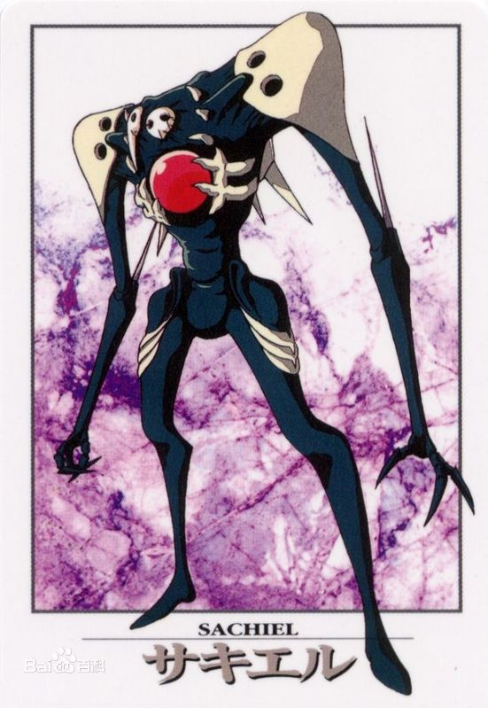
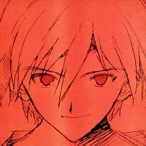

| 个人主页 | 剧情简介 | EVA驾驶员 | EVA机甲 | 使徒情报 |
 |
第一使徒亚当 使徒的父亲，地球生物的起源，真正的拥有者，因为莉莉丝的到来陷入沉睡，第二次冲击的罪魁祸首，除去零号机（存疑）初号机后所有EVA的身体来源，因为Seele向起注入人类基因而苏醒引发二次冲击，之后被还原成卵，灵魂进入自由天使渚薰体内，肉体由加持良治给了碇司令，碇司令将其植入手臂，等待补完，最后被莉莉丝绫波丽夺取，因为莉莉丝取得补完胜利，二号机死于量产机，三号机死于初号机，四号机死于S2机关研究，量产机被莉莉丝绫波丽同化自杀，最终其和其全部复制体而死亡。 |
第二使徒莉莉丝 人类的母亲，第三次冲击人类回归的母体，自身的到来让亚当陷入沉睡，在自己沉睡时身体分裂为人类，人类进而窃取了地球，灵魂被剥离出来植入容器绫波丽体内，肉体被囚禁于第三新东京市下Nerv本部最终教条区，初号机的身体来源，零号机可能的身体来源。莉莉丝的灵魂在二号丽自爆后，三号丽自身认知的空白期下因渚薰的引导而觉醒，进而和绫波丽本身的自我意识融合，成为了拥有人性的神，在人类补完的关键时刻选择追随自己真心，夺取了碇司令体内的亚当肉体，回归莉莉丝肉体，引发人类补完并将人类补完的主导权交由了碇真嗣，消灭掉了亚当系的全部生物，在补完即将完成的时刻因为碇真嗣的反悔选择通过自杀终止补完，最终死亡，其肉体分身初号机被碇唯的精神控制，并捕获了朗基努斯之枪，成为自己最为成功的后裔，离开地球，成为人类的见证。 |
|
|  | 第三使徒“水天使”萨基尔 故事中出现的第一位使徒，实力相当不错，全灭了战自防线，迫使其交出指挥权给Nerv，硬吃N2地雷仍可以自我修复，具有自我学习能力，被炸了后甚至学会了电磁干扰，双眼可以放出光线，同时拥有较强的近战能力，和初号机展开了激斗，最终不敌暴走的初号机，最终选择自爆企图和初号机同归于尽。 |
第四使徒“昼天使”夏蒙泽尔 故事中第二位出场的使徒，武器是类似激光鞭的双手，攻击力较强，在和初号机的战斗中让初号机一度陷入了危机，但在真嗣发现自己的好麻吉铃原和相田出现在战场时不得不拼命抵抗，而在两位好友进入初号机后，真嗣面对进攻认为自己不能放弃，拒绝了美里的撤退指令，在内置能源即将用完的时刻刺杀掉了昼天使，昼天使完整的躯体让Nerv和Seele对使徒有了全新的认识，包括基因序列和人类极其相似，使徒的能源系统确实是S2机关等。 |
|
第五使徒“雷天使”雷米尔 是剧中攻击力最强的使徒之一，长相为完美的反光多边形，攻击方式为通过核心高能反应射出的类似激光的能量，击溃了所有常规武器的攻击，并无差别打击了所有其认为的敌人，甚至包括一个初号机的气球模型，拥有强大的AT立场阻挡外界攻击，并缓慢的通过自身底部的钻头企图直接攻击Nerv最终教条区。在全部常规武器攻击失效后葛城美里提出了集中日本所有电力，通过阳离子炮轰击的“屋岛作战”方案，此役中绫波丽为了掩护第一发射击未中的初号机，舍身硬抗雷米尔攻击为初号机赢得了第二发射击的时间，真嗣也为此在战斗结束后急切的救出了绫波丽，赢得了动漫史上著名的画面，绫波丽的微笑。 |
|
第六使徒“鱼天使”迦基尔 驰骋在太平洋上的深海巨兽，为追索感受到的加持良治负责传递的亚当肉体，展开了对国联太平洋舰队的攻击，具有一定的战斗力，可以硬吃国联舰队的攻击，在夺取作战中被同样在舰队的二号机和其驾驶者明日香及真嗣拦截，在面对水中作战难以胜利的情况下美里提出通过自沉两艘战列舰，直接送入迦基尔嘴中开炮的方案，在最后一刻明日香和二号机产生共鸣，强行撬开了迦基尔的嘴，送入战列舰，战列舰零距离轰杀迦基尔。 |
|
第七使徒“音乐天使”伊斯拉菲尔 出现于战场上的唯一可以分身的使徒，拥有两个核心，需要同时击溃，尽管自我修复能力很强但是进攻能力并不强，第一次面对初号机和二号机的进攻，利用自身的分身能力将两架EVA击退，但本身受到N2地雷轰击导致行动停止，在明日香和真嗣通力合作之后，第二次作战在两人近乎同步的作战下，同时命中伊斯拉菲尔的两颗核心，将其击溃。 |
|
 |
第八使徒“胎天使”圣德芬 圣德芬在剧集中并未展示出真正的形象，而是以卵的形式存在于火山之中，在二号机进入火山对其进行捕获的时刻突然孵化，开始变为某种有触手和爪子大嘴的形象，外壳非常坚硬，二号机的高离子震动刀无法攻破，在事关紧急的时刻，明日香想到了和真嗣讨论的热膨胀的原理，在岩浆之中向使徒打入大量冷却液导致失压，最终被自然力量粉碎消灭，随即二号机因为失去安全绳索掉落火山，初号机在没有防护措施的情况下跳入岩浆将二号机救起。 |
第九使徒“雨天使”巴特里尔 雨天使巴特里尔是剧中能力最弱的天使，没有之一，在Nerv因为加持良治的行动陷入大停电时选择进攻Nerv，攻击方式是通过类似眼睛的位置释放出强腐蚀液，但是杀伤效果一般，最后被三架EVA通力协作，由真嗣用来福枪扫射击毙。 |
|
第十使徒“空天使”萨哈魁尔 超级巨型炸弹，从轨道空间通过爆炸修正自己的降落地点，企图直接炸平第三新东京市，就破坏力来说是全部使徒中最强的，具有极强的AT立场，宇宙空间中的武器无法对其造成损伤，在近乎必死的局面下，葛城美里选择让三架EVA生生接住降落的使徒，然后击破其核心，在战斗中真嗣优先接住了使徒，绫波融合了萨哈魁尔的AT立场，由明日香刺破核心，消灭了使徒。 |
|
第十一使徒“恐怖天使”伊洛尔 伊洛尔是某种细菌大小的使徒，借助人类的工作失误，附身于建筑材料进而入侵Nerv, 拥有可以肉眼看到的AT立场并抵抗了第一轮消毒工作，在人类发现其不喜欢臭氧而大量注入后又立刻进化到可以接受这种环境，腐蚀了整个Nerv的大部分地区和一个EVA的复制体，并且通过电缆计划入侵计算机系统，企图控制MAGI，是整个剧中Nerv唯一彻底束手无策的使徒，最终在赤木律子的建议下，提出通过MAGI加速进化使徒的方案，因为“进化的终点是死亡”，最终MAGI促使伊洛尔进化，导致伊洛尔死亡。 |
|
第十二使徒“夜天使”雷里尔 具有反AT立场能力的使徒，攻击方式是将敌人吸入虚数的合集，狄拉克之海，本体是地上的影子，天空中巨大的球体是自身的投影，通过利用真嗣的自大捕获了真嗣，并险些同样捕获二号机，在狄拉克之海中的真嗣和雷里尔产生了接触，雷里尔不能理解真嗣的想法，而濒临死亡的情况，激发了真嗣的求生意志，和初号机中碇唯的灵魂产生了共鸣，中和了雷里尔的AT立场，从狄拉克之海中挣脱，进而消灭了雷里尔。 |
|
第十三使徒“霰天使”巴拉基勒 霰天使巴拉基勒在三号机从Nerv北美第一支部运往日本本部的途中，经由一片云层，感染寄生了三号机，并且在驾驶员铃原参加三号机启动实验时夺取了三号机的控制权，在接近Nerv本部的途中，轻易击溃了二号机，企图腐蚀零号机，在零号机丧失战斗力后于初号机交战，真嗣因为顾及三号机中的伙伴铃原处处被动挨打，在被霰天使快掐死的时候，碇司令启动了初号机的傀儡系统，控制初号机，彻底的摧毁了三号机和霰天使，最终驾驶舱被初号机捏爆，铃原重伤，进而导致了真嗣放弃驾驶初号机，威胁毁灭Nerv最终离开第三新东京市。 |
|
第十四使徒“力天使”赛路尔 力天使赛路尔是本作中出现的最强物理进攻天使，攻击方式包括可伸缩的手，目视发出的类似激光和AT立场，具有一击直接攻破十几层Nerv防御装甲的能力，所有常规武器攻击全部彻底无效，无法构成任何杀伤，在面对二号机和明日香时彻底无视了明日香对于它的立场中和，直接卸掉二号机双臂并且枭首，面对零号机的自杀式袭击时关闭核心硬吃N2炸弹而战斗力依旧，击溃了零号机，已经离开Nerv的真嗣也因为赛路尔的进攻没有撤离，在加持良治的劝说下，返回Nerv驾驶初号机和赛路尔展开了战斗，真嗣出色的驾驶技术在上半场占优，但因为电力耗尽遭到反打，直接被剥离出了核心，险些死亡，在千钧一发的时刻和自己的母亲碇唯产生共鸣，碇唯为了保护自己的儿子，同时也借由此等机会获取S2机关，觉醒和赛路尔战斗，在觉醒的初号机面前赛路尔不堪一击，最后被初号机吞噬，导致初号机获取S2机关彻底觉醒，打断了Seele的人类补完计划，碇真嗣在同步率超过400%后丧失肉体，融入初号机并拒绝返回现实，后来在其母亲的强迫下，重铸肉体返回现实。 |
|
第十五使徒“鸟天使”艾里尔 强大的精神攻击型使徒，出现后并未主动进攻Nerv，拥有较强的AT立场和防御力，起码阳离子炮无法在足够远的射程内击破其防御，处于扔掉朗基努斯之枪的考虑，碇司令要求二号机和零号机提前出击，此时明日香因为日益封闭内心同步率下降，战斗能力较差，但仍逞强打头阵以求证明自己，艾里尔直接展开远程精神攻击轰开了明日香内心的防线，挑弄出她心中的黑历史，直接导致明日香精神崩溃，而后借由此为借口，命令零号机投掷原本抑制莉莉丝的朗基努斯之枪来消灭艾里尔，最终“弑神之枪”刺穿艾里尔的AT立场，消灭使徒，且被月球捕获，不可回收。 |
|
第十六使徒“子宫天使”阿米塞尔 子宫天使在鸟天使死亡后即刻出场，形象为类似DNA的条状生物，拥有较强的进攻能力，零号机即使在零距离对其展开攻击也无法造成伤害，阿米塞尔对人类展示出了极强的好奇心，开始进攻后直接选择入侵零号机腐蚀绫波，拨开了绫波内心对于真嗣的渴望，在初号机出发救援零号机后，更是化身二代丽内心最深的渴望，直接扑向初号机，导致真嗣精神极度紧张，战斗不能，在知晓自己心意后，绫波反转零号机AT立场，强行将阿米塞尔回收入零号机核心，此时阿米塞尔长出了象征沟通的巴别塔，形象包括之前出现的所有使徒，被视为拥有过去所有使徒的DNA数据，但零号机中绫波丽将其彻底封闭，选择自爆来保护真嗣，在自爆后阿米塞尔同零号机和二代丽一起死亡。 |
|
|  | 第十七使徒“自由天使”塔布里斯 渚薰是在第二次冲击时刻诞生的亚当系最后的生物，可以推测其生来就被Seele控制，并且被注入了亚当的灵魂，作为Seele操纵人类补完的部件，在对人类的观察中，塔布里斯代表的自由意志和亚当企图补完人类的灵魂共同构建出具有人性的神，渚薰。在碇司令越发失去控制时Seele派其直接进入Nerv，给与了渚薰关于亚当肉体的错误信息，表面上是向渚薰投降，实际上则是希望渚薰和碇源堂拼个两败俱伤，渚薰自己通过观察人类，对人类产生了好感，相继唤醒了三代丽体内莉莉丝的灵魂，协助真嗣日益振作，却不得不屈从亚当的意志，控制二号机攻向最终教条区启动补完，在过程中因被欺骗最终教条区的肉体是亚当的肉体而放弃和二号机融合，最终导致二号机被真嗣消灭，自己被莉莉丝绫波丽困死在最终教条区，面对必败的情景，选择向莉莉丝绫波丽投降，祈求莉莉丝凌波丽不要开启补完，并决心背叛亚当和Seele，顺从自己的意志选择死亡，最终由真嗣消灭，直接导致了真嗣精神的极度不稳定，影响了后续的人类补完。 |
第十八使徒李林 剧中的人类，在莉莉丝到达地球沉睡后，通过黑之月产生的生物体，最终窃取了地球。 |